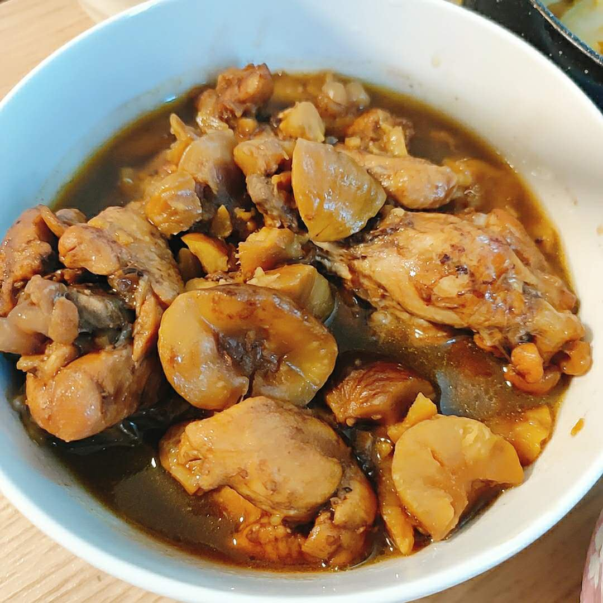
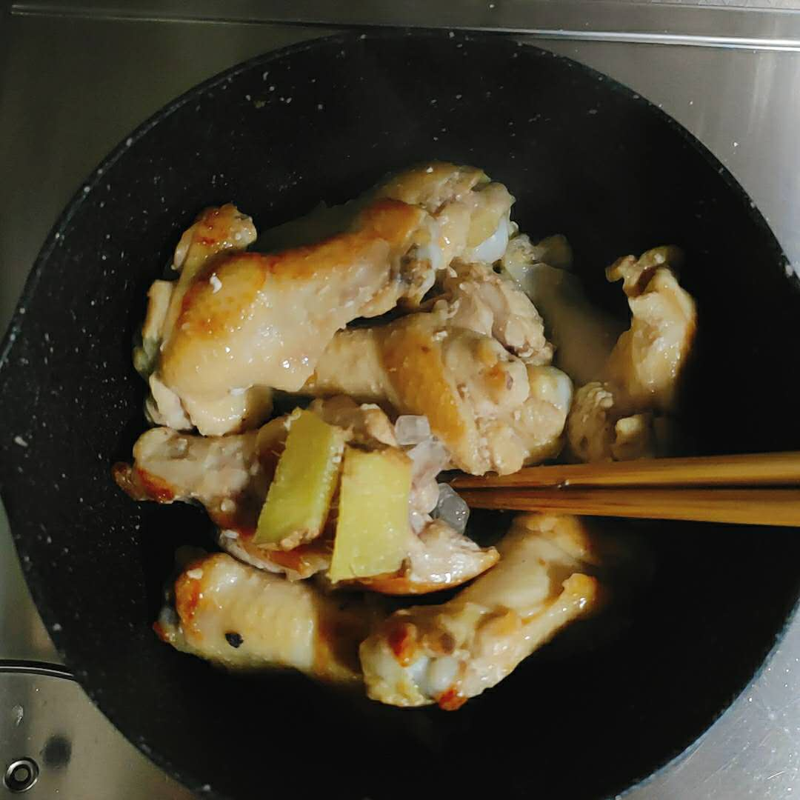
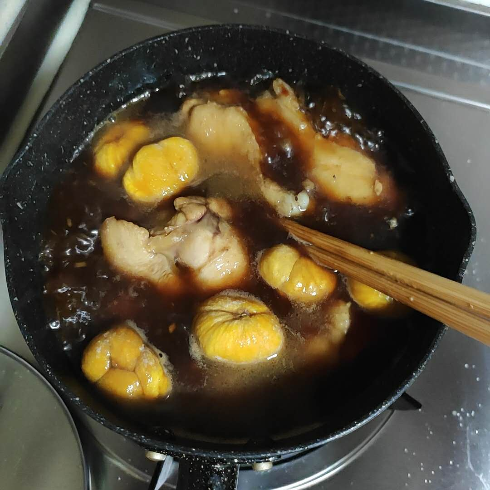

关于这道菜
小的时候家楼下有家快餐店，是那种菜一盘盘盛好，你一路走过去想要什么拿什么，最后结账的那种。
我妈值班不回家的时候，我爸几乎都是带我去那里吃饭。
我最喜欢它家的栗子鸡，5元一份，量不多。
鸡什么味道我是不记得了，但我特爱吃里面的栗子，甜糯糯的。
可惜不是每次去都吃的到，大概是江南人都喜欢这种甜糯糯的滋味吧。
其实说起来我这个人挑食的很奇怪，
普通的生板栗我不吃，在冰箱里放久了脱水变甜的生板栗我爱吃，
普通的熟板栗我不吃，栗子鸡中甜糯糯的熟板栗我就很爱吃。
诸如此类，莴苣、番茄等等我都只挑那么一两种做法才吃。
后来我搬家了，便再也没去过了。
我爸也会在家做饭了，我难得回趟家，就几乎不在外边吃饭了。
我现在偶尔会想起来小时候很喜欢的一些味道，
不记得名字的快餐店的栗子鸡，
不记得名字的游走早餐车的荷叶鸡，
小学门口无名小店的糍饭团，
搬家前楼下的沙县的蒸饺、馄饨、蛋炒饭和肉丝面，「别家沙县都不是那个味儿」
楼下超市门口的臭豆腐……
都很久没有再吃到过了，但我却到也没有想去吃一次，
一是隔了十多年这些小店大概都关门了吧，二是隔了十多年的记忆里的美味大多都加上了回忆的滤镜，
让现在的我再去吃一次，失望的可能性反而会更大一些，不如留在记忆里面做一个美好的回忆。
至于这些食物，找个菜谱，对照着自己回忆中的味道去复刻吧，
我想这样更能找到如今的我所喜爱的味道。
过年回来阿崽带了一些剥好壳的熟板栗，我冻在冰箱里。
偶尔会取一些和鸡块一起做成栗子鸡，栗子很甜糯，是我喜欢的那种，崽也喜欢。
现在已经吃完啦，想来短时间内不再会做栗子鸡了。
北京的板栗价格抵得上肉，说起来真是想念老家自家的板栗树呢。
写着写着感觉又要回忆板栗树了，就此打住吧，该写菜谱了。

食材清单
| 材料 | 说明 | 用量 |
|---|---|---|
| 板栗 | 生熟都没关系，要去好壳哦 | (0,吃饱)，建议10颗 |
| 鸡肉 | 可以是鸡翅根/鸡翅或者大小为[栗子，鸡翅]的鸡块 | (0,吃饱)，建议500g |
| 生抽 | 提供咸鲜味 | 适量，建议3瓷勺 |
| 冰糖 | 提供甜味以及轻微上色 | [0,适量]，建议1/5瓷勺 |
| 老抽 | 上色 | [0,适量]，建议1瓷勺 |
| 蚝油 | 提供复合的咸鲜甜味 | [0,适量]，建议1瓷勺 |
| 料酒 | 去腥，也可用啤酒代替 | [0,适量]，建议1瓷勺 |
| 姜片 | 去腥 | [0,适量]，建议2-3片 |
| 食用油 | 鸡肉皮多 && 用不粘锅可以不放，否则要放 | [0,适量] |
| 盐 | 提供咸味，等汤烧开尝一尝决定要不要加 | [0,适量] |
步骤总结
- 煎鸡肉
- 加水调味
- 加栗子
- 小火咕嘟咕嘟炖到喜欢的软烂度
步骤详解
鸡肉腥味一般不是很重，特别是鲜鸡，所以一般可以省去焯水这一步骤。
如果是冷冻鸡解冻后可以泡上3-4小时的清水，中午泡晚上做就正好，能泡掉一些腥味。
洗洗干净，沥个水，沥水这一步呢，如果用不粘锅不加油的做法来做可以偷懒，别太湿就行，否则一定沥干或者用厨房纸擦擦干，不然先是油爆到你怀疑人生，等噼里啪啦消停后锅里就会是一堆水油混合物在”煮鸡肉了”，别问我怎么知道的。
带皮的鸡肉的话，用不粘锅，直接皮朝下码好来煎就很不错，鸡皮会煎出鸡油，我煎我自己，成菜也不会过于油腻。
煎到焦黄就可以放姜片和冰糖，这时候火要调小一些，以免糖糊了发苦。

在加冰糖前呢，人离开锅没事，可以去洗洗别的菜、淘个米之类的，多线程工作节约时间。
加冰糖后就要勤翻动了，糖会逐渐融化，鸡肉上也会附着上焦糖色。
然后就可以加水调味了，炒糖单纯是为了好看，偷懒的时候不炒也行，直接加水调味。
水建议开水，凉水会让肉收紧不容易炖烂，但因为是鸡肉其实没这个烦恼，冷水也行的。
将生抽老抽料酒蚝油一股脑的下锅，水煮开之后用筷子蘸点汤尝尝味道，淡了就加盐，咸了可以加水或者加土豆块，不够甜就加糖，太甜我也不知道该咋办，回头骗阿崽多吃点。
栗子也直接丢进去。

然后就是漫长的咕嘟咕嘟了，小火咕嘟就行啦。
鸡肉很容易熟，板栗生吃也行，看个人喜欢的软烂程度就行，建议40分钟+，鸡更入味，板栗更软糯。
像我这种偷懒的人，直接丢进了高压锅里，选了肉/鸡模式，就可以跑去玩，直到悦耳的结束提示音啦～
「我超爱我的高压锅，没广告费不推广，需要入高压锅的可以想办法联系我问。」
技术总结
- 一般来讲鸡块都带皮，找个不粘锅皮朝下煎出鸡油来我煎我自己就挺好。
- 调味其实很随意，用调味料调出自己喜欢的咸度、鲜度和甜度就行，不确定就多尝尝汤，汤要偏咸一些鸡肉才好入味。
- 不管你是生熟栗子党还是软硬栗子党，非常建议试一试煮的软软糯糯的栗子。
- 本菜谱去掉栗子可以变成红烧鸡，栗子更换成其它根茎类蔬菜可以变成土豆烧鸡等等。